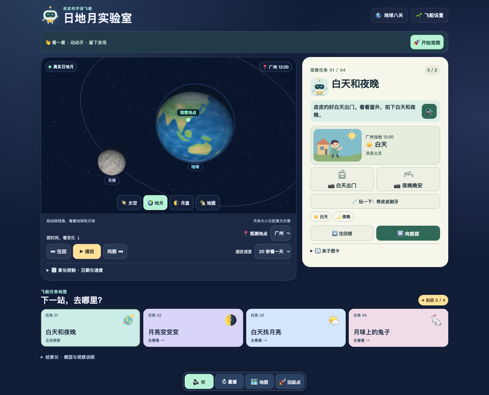
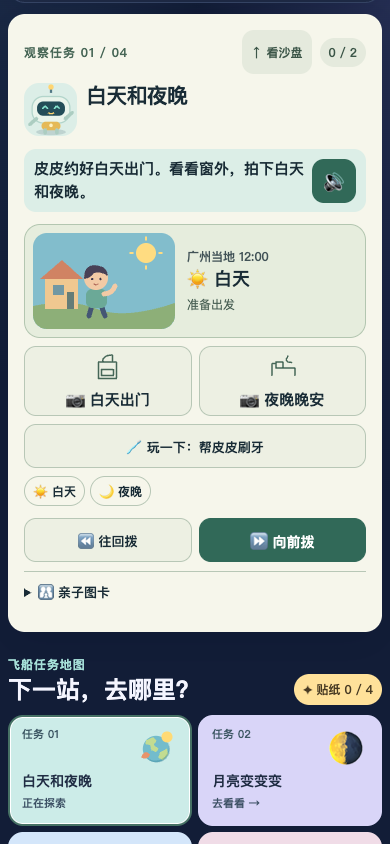
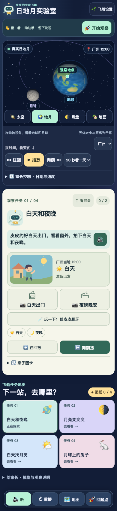
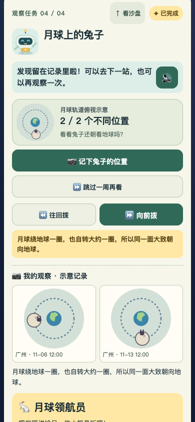

让孩子看见地球、太阳和月亮的关系
本页是供 ChatGPT Pro 和家长阅读的静态评审材料，无需登录、无需运行 JavaScript。下方图片是本轮实际浏览器界面截图，不是设计稿。完整游戏另见入口；三维交互需要支持 JavaScript 和 Canvas 的浏览器。
评审目标
家庭中一个孩子能自主阅读，另一个尚未识字。目标是让未识字孩子靠图示和语音知道下一步，识字孩子可以自主探索；家长可以共同学习，也可以让孩子独立玩。趣味性、具体生活情境、科学原理的可观察性优先，不依靠识字量、答对率或签到奖励。
请评审可读性、操作理解、趣味性与科学表达，区分画面或规则中可确认的问题与需儿童实测的假设。如果工具无法运行完整游戏，请基于本页材料评审，并明确未亲自验证交互；不要把静态截图称为实际试玩。
孩子怎样开始
- 首页点“开始观察”，直接来到当前任务，不必先读长说明。
- 未识字模式显示短步骤和喇叭；自主阅读模式显示完整说明，不强制播放语音。
- 在沙盘或任务旁拨动时间，观察画面变化。生活动作和相机视角都不会改变天体时间。
- 匹配图形或记录观察，留下对应 UTC 和城市的示意记录。完成后朗读具体科学解释，再展示固定贴纸。
- 可以去下一站，或“再观察一次”。新一轮保留永久贴纸与上一轮记录，不重复增加贴纸。
四个可玩任务
| 任务 | 孩子做什么 | 观察的原理 |
|---|---|---|
| 白天和夜晚 | 皮皮约好白天出门。看小屋窗外，拍下同一城市的白天和夜晚；可以刷牙、背书包、说晚安。拨时间后光照与地球同步变化。完成后保持同一 UTC 换城市比较。 | 地球自转使同一地点轮流朝向和背向太阳。生活作息是故事约定，不把白天休息判为天文错误。 |
| 月亮变变变 | 观察月盘，从细月、半月、满月图中选匹配的一张，收集三种。可选观察站只有编号，跳转不直接给奖励，记录前不显示月形名称答案。 | 太阳照亮月球，日地月位置变化使观察者看到的亮面比例变化；普通月相不是地影遮挡。 |
| 白天找月亮 | 在地面天空里寻找同时升起的太阳和月亮。帮助藏在“带我看一次”中，跳到时刻后仍需自己记录。 | 白天也可能看见月亮。任务用日月中心都高于地平线 5° 作为取样条件，不代表真实天空一定肉眼可见。 |
| 月球上的兔子 | 兔子是画在月面的方向标记。先猜朝向，再记录两个不同轨道位置，前后两张图并排比较。 | 月球公转一圈也自转约一圈，所以大致同一面朝向地球。不能由此说月球没有自转。 |
实际界面截图




本轮已经修正
- 修正听读模式只读成功提示、未读科学解释的问题。
- 提高手机主行动可见性，隐藏非必要长说明，把 UTC 收进家长控制。
- 将帮助与领奖分开，增加观察对比、下一站及真正的新一轮记录。
- 同轮昼夜必须来自同一城市，避免跨城市拼接成“同地点变化”；跨城比较保持同一 UTC。
- 记录日期和时间统一使用观察地时区。两位船员的阅读偏好、观察和贴纸隔离。
科学与实现边界
统一 UTC 快照由 Astronomy Engine 2.1.19 计算，三维使用 Three.js 0.187.0。天体大小和距离采用教学显示比例，不能从屏幕距离计算实际比例。月面和轨道为示意，月球同步自转未包含真实天平动；天空省略天气、遮挡、大气折射及食相。地面图是有方位标记的 360° 天空全景示意，不是无畸变透视。观察真实天空时不要直视太阳。
经典八关保留原有教学简化模型，尚未全部迁移至统一真实 UTC 模型。本轮不是十专题全部交付。浏览器仅保存本机两个船员进度，不上传儿童姓名或定位；不同域名之间存档不会自动同步。
验证与尚未验证
- 34 项科学、坐标、任务规则和存档单元测试通过。
- 本地最终构建 19/19 浏览器测试通过；个人服务器线上资源 19/19 通过，零跳过。
- 230 个正式资源 SHA-256 校验一致；截图覆盖 390、834 和 1440 像素视口。音频文件可解码，拒播不阻断操作。
- 线上交互测试通过逐请求验证公开证书和文件哈希的本机传输完成，不等同于原 IP 域下的手机 Safari 测试。
- 实体手机/平板、扬声器听感、低端设备性能、两个孩子独立操作和主动重玩仍未完成验收。
请 Pro 优先回答
- 未识字孩子是否能知道下一步、理解反馈？哪些地方仍依赖家长读字？
- 操作是否能带来可看见的发现？哪里仍容易退化成照着按钮配对领奖？
- 哪些提示可能产生科学误解，尤其是生活作息、月相、同步自转和白日可见性？
- 请只列最值得优先实施的 3–5 项改进，给出具体触发场景、建议和儿童试玩验收方式；保留已认可的画风与统一科学模型。